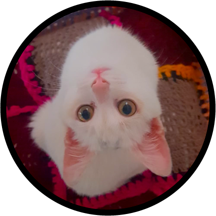

Ciao, sono Betulla
La realidad es solo una pequeña parte del vasto tapiz del espacio-tiempo.

Desde los rincones secretos del cosmos, donde la luz colapsa para dar paso a grandes galaxias, surge Betulla, descendiendo desde las constelaciones para tejer su propia leyenda en la Tierra. Envuelta en un color blanco, que refleja la luz de sistemas solares lejanos y con movimientos ajenos a las leyes de la gravedad terrestre, se desplaza con gracia entre dimensiones, siguiendo los caprichosos senderos de la energía cuántica.

Oír lo Invisible
Aunque sus oídos no captaban las vibraciones sonoras de este planeta, su sordera no fue un impedimento, sino una puerta abierta a un mundo de vibraciones terrestres y conexiones telepáticas que solo aquellos que la conocieron pudieron percibir.

Travesuras Gravitacionales
Con sus juegos que desafían las leyes de la gravedad y de la física terrestre, convirtió cada día en una aventura intergaláctica, recordándonos que, a veces, las mejores historias se encuentran entre las huellas de las patas de una gata cósmica.
Portal Estelar
En sus largas horas de sueño, realmente se sumergía en los misterios que trasciende las fronteras del tiempo. Su cuerpo se convertía en un portal hacia los enigmas del universo, explorando mundos lejanos y descifrando los secretos que solo ella podría revelar.